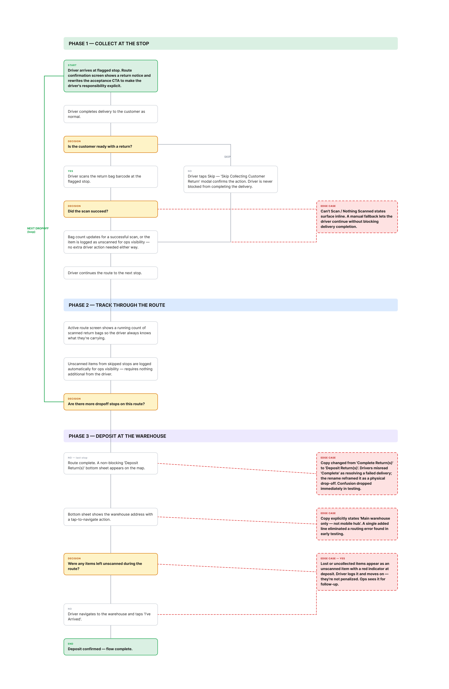
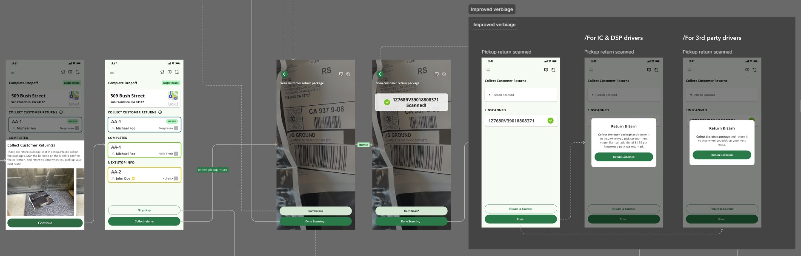
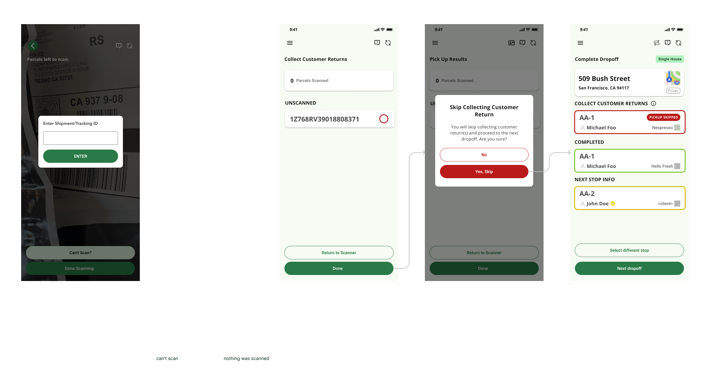

Extending Jitsu's driver app to collect Nespresso's used coffee pod bags at the point of delivery — turning every reorder into a recycling event without adding a new stop, a new app, or re-training drivers.
Nespresso needed a way to collect used aluminum pod bags from customers at scale, but adding a dedicated pickup route was logistically impractical. The opportunity was already on the road: when a Nespresso customer reorders pods, a Jitsu driver is already headed to their address for the delivery. That same stop could close the recycling loop — deliver new pods, collect the old bag.
The existing driver app only handled outbound deliveries. There was no concept of collecting something from a customer at a drop-off stop, no conditional stop logic, and no flow for logging a physical handoff that required a verifiable chain of custody. The goal was to add this workflow to an app drivers used every day without disrupting the patterns they already knew — and without ever blocking a driver from completing their delivery if the customer wasn't ready.
Before designing anything new, I spent time reviewing the existing driver app's flows — particularly the inbound scan and route confirmation patterns — and aligned with Nespresso and Jitsu stakeholders on the operational requirements. Several constraints shaped the design from the start:
"I'm already at their door with a package — if they hand me a bag, I'll take it. But I'm not going to knock twice or wait around."
— Driver, contextual interview
The core design principle was reuse. Every driver already knew how to scan a barcode, accept a route, and confirm an action in the app. The pickup return flow needed to feel like it had always been there — not like a bolt-on feature. I audited the existing scan UI, the route confirmation screen, and the post-delivery confirmation patterns before writing a single new screen.
The feature spans three phases that map to the natural shape of a driver's shift. Each phase reuses existing app patterns and adds only what the new workflow requires:
The route confirmation screen flags that the route includes customer returns and rewrites the acceptance CTA to make the driver's responsibility explicit. At the flagged stop, after delivery, the driver scans the return bag's barcode or skips if the customer isn't ready — they are never blocked from completing the delivery.
Scanned bags are counted and surfaced throughout the active route so the driver always knows how many returns they're carrying. Unscanned items from skipped stops are also logged for ops visibility without requiring the driver to do anything additional.
At route end, a non-blocking bottom sheet on the map prompts the driver to deposit collected bags at the main warehouse. The flow provides the address, tap-to-navigate, and a single "I've Arrived" confirmation. Copy explicitly states main warehouse only — not a mobile hub — eliminating a routing error discovered in early testing.

Two decisions that came out of testing had an outsized impact on how the feature was understood — neither involved adding a screen:

The Pickup Return feature shipped in July 2024 as part of Jitsu's Nespresso delivery partnership. Because the flow was built into the existing app with no new training required, driver adoption was frictionless from day one.
New apps, new routes, or additional vehicles — the collection is fully absorbed into existing deliveries
Closed-loop reverse logistics — used pods ride back on existing delivery routes, eliminating extra vehicle trips and the CO2 emissions they'd add
Less energy required to melt collected aluminum pods into raw sheet stock, compared to mining and refining brand-new bauxite
The most valuable thing I did on this project wasn't designing a new screen — it was deciding which screens not to design. The scanner, the confirmation card, the bottom sheet: all of those existed. The work was in identifying where the existing patterns could carry the new workflow and where they needed a specific addition. Getting that boundary right kept the feature light enough that drivers didn't feel they'd been given a new job.
The language iteration from "Complete Return" to "Deposit Return" was a reminder that copy is part of the design. A word change that takes thirty seconds to make can undo a flow that took weeks to build — in either direction. The most important design decisions in this project were often the smallest ones.